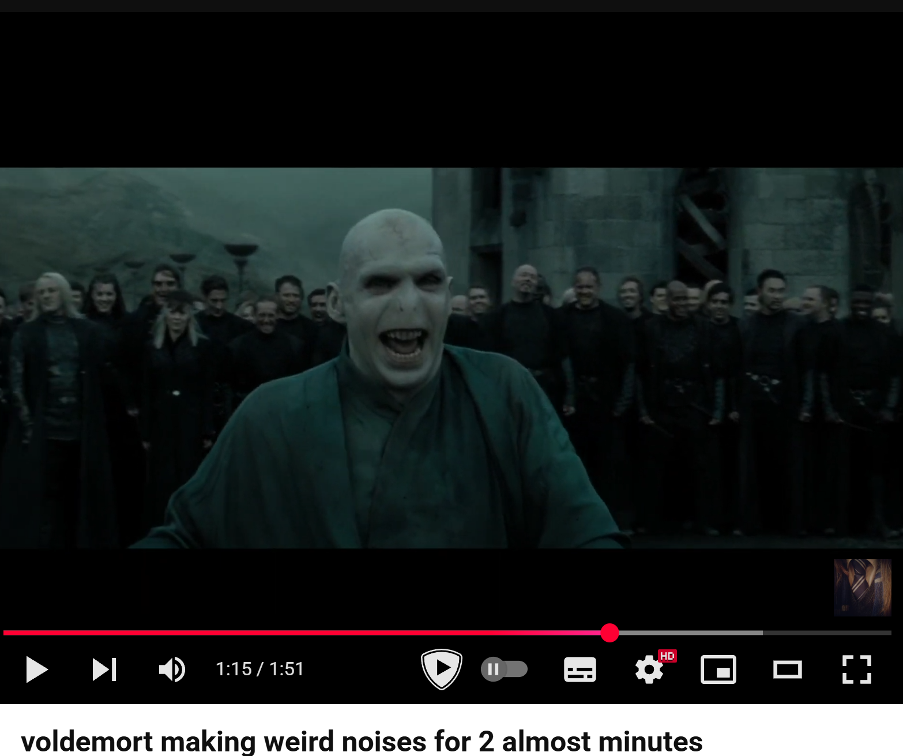
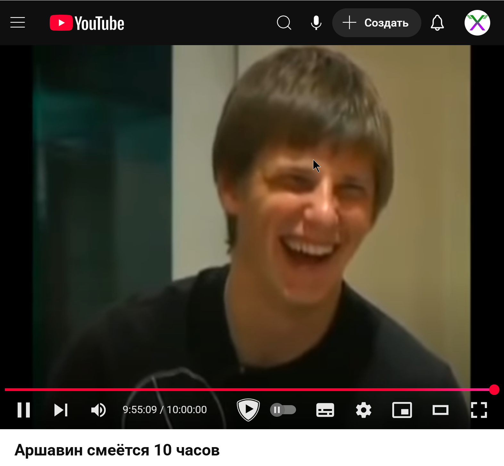
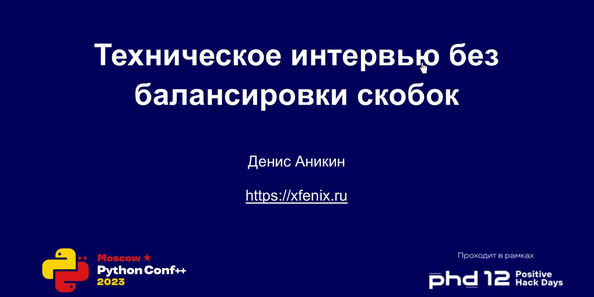
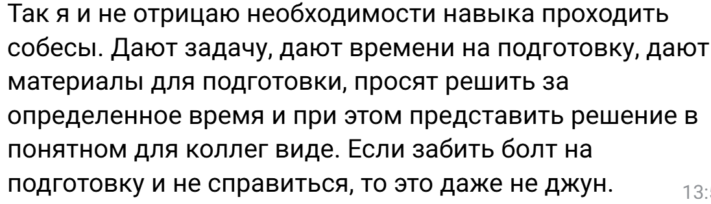
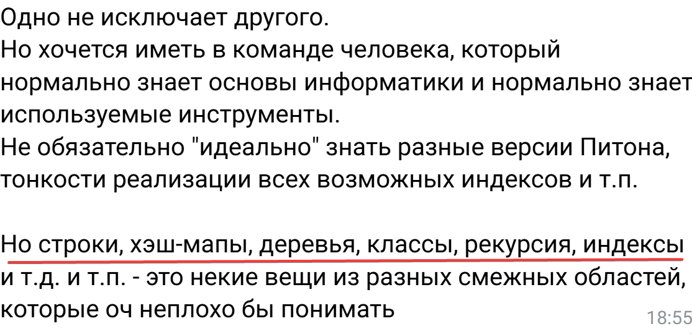

Алгоритмы и прочие проблемы современного найма программистов
Денис Аникин, https://xfenix.ruКто я

- Техлид в AI Platform в Райфе
- Лидер корп. Python Community
- Python, typescript, kubernetes, архитектура
- Выступаю, работаю в ПК
Ищем работу в 2025 году:

О чём будем говорить
- Наём программистов
- Этапы
- Где процесс проклят
- Ну и конечно…
Разгоны про алгоритмы
Толчём воду в ступе!
- Алгоритмы на собесах = проверка алгосов на собесах
- Не помогают с «хорошими»
- Отсеивают тех, кто не любит лайвкодинг
- Не обоснованы никак



Фактология
- Доказательств в пользу алгоритмов нет
- Что такое «алгоритмы»?
- Отсеивают тех, кто не любит лайвкодинг
- Не обоснованы никак
«часто валю сеньоров со стажем
в 15-20 лет» ©


Задачи найма
- Быстро
- Дешево
- Найти
- Человека
Алгоритмы это же база!!!
- Кто сказал?
- Доказательства?
- «Я так скозал» не принимаем сегодня к оплате

✨✨✨
💅💅💅

Есть пара мыслей
- Управляемость и тупая работа == кандидаты на заменяемость LLM
- Следование правилам проверять легко
- Предложите правила…
- …если человек им следует, то…
Туда же
- Проверка как человек мыслит
- Проверка «лояльности»
- Прочие «проверки»
Неожиданная мысль —
попробуйте прямой путь,
а не кривой

Да это же… адепты резни ❤️❤️❤️
Найм
- Это не отсев!!!
- Подходящий кандидат
- Первый хороший
- Алгоритм привередливой невесты


Не надо. Собесы не имеют самоценности!!!

Хорошо, когда ты миллионер и деньги тебе не требуются! Почтение!
Сроки и экзамены!

Взрослые люди ищут работу, чтобы жить и приносить пользу

Ещё одно золото
- Алгоритмы и структуры — плохой заезженный мем
- Алгоритмы не живут отдельно
- Спросите чатботов
Давим фактами алгособесы
Важно
- Надо наконец аргументированно им накинуть
- Но, нельзя доказать отсутствие чего-либо
- «Чайник Рассела»
Почему всё пришло к таким проблемам
Потому, что
- Истеричный надрыв — реально база
- А… ЧТО… ЕСЛИ… МЫ… НАЙМЁМ ПЛОХОГО ПРОГРАММИСТА???
- Ну уволите его
Чему меня научили крутые рекрутеры
- Сидеть и надумывать — плохо
- Дольше сидишь — вяжешься к ерунде
- Работать надо
Доказательства
- ОПГ становятся жестче
- Мемные гугловые рекрутеры
- Алгоритмы и сисдиз — круговорот «надо сложнее»
| Метод | Результативность | Увеличение процента использования |
|---|---|---|
| GitHub Contribution Analysis | 78% | 83% |
| Work Sample Projects | 71% | 68% |
| Technical Discussion of Past Work | 64% | 59% |
| Pair Programming Sessions | 58% | 62% |
| Traditional Algorithmic Interviews | 34% | 18% |
| Resume Screening | 21% | 12% |
Доказательства
- ОПГ становятся жестче
- Мемные гугловые рекрутеры
- Алгоритмы и сисдиз — круговорот «надо сложнее»
Альтернативы
Грех оценки
- Программисты хотят друг друга оценивать
- Кто вы, чтобы давать оценку?
- Базы не знает!
- КАК МОЖНО ЭТОГО НЕ ЗНАТЬ???
- Высокомерие + обесценивание
Вместо заключения
- Если вы слышите меня — вы и есть сопротивление
- Я обращаюсь к тем кто ненавидит это
- Вы настоящее и будущее индустрии
- Не создавайте алгоритмические собеседования
- Не ходите туда, где алгоритмы
- Я здесь ради вас, холивары мне не интересны